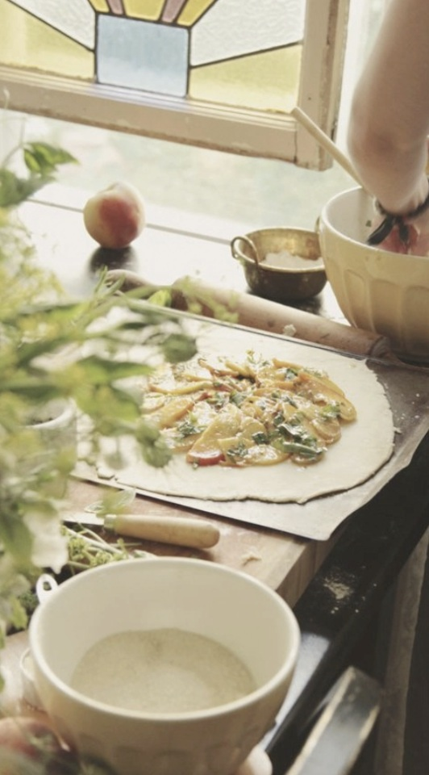
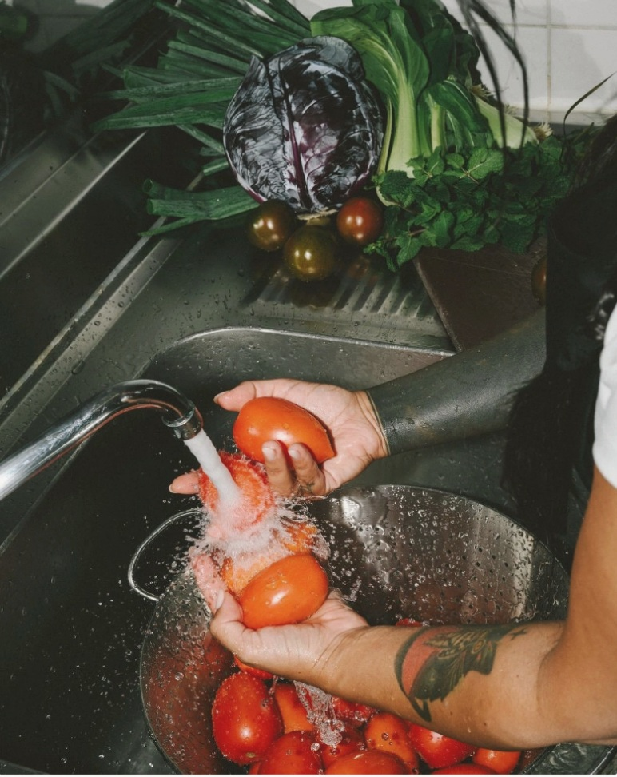

Conectar con lo que nos alimenta.
No es un eslogan suelto — es el porqué de todo lo que hacemos. Aquí está lo que creemos, hacia dónde vamos y lo que no cambia en ninguna receta.
Conectar con lo que nos alimenta.
Creemos que la comida es mucho más que lo que ponemos en el plato.
Es una forma de nutrirnos, de cuidarnos y de conectar con nosotros mismos.
Está en la tierra de donde vienen los ingredientes, en las manos que los trabajan y en el tiempo que dedicamos a prepararlos.
Está en las recetas que heredamos, en los sabores que descubrimos y en las estaciones que transforman nuestra despensa.
También está en las personas con las que compartimos la mesa, en las conversaciones que se alargan y en los pequeños momentos que merecen ser disfrutados.
Creemos que comer bien no significa renunciar al placer.
Queremos recuperar una relación con la comida más presente, más libre y más conectada con la tierra y con quienes nos rodean.
Porque alimentarnos es parte de la vida. Y merece la pena vivirlo con atención.
Propósito, misión y visión.
Conectar con lo que nos alimenta.
Hacer que los momentos cotidianos alrededor de la comida tengan más valor: apreciar lo que tenemos delante, escuchar lo que necesitamos, disfrutar de los sabores, compartir con los demás y reconocer el vínculo con la tierra.
Reinterpretar lo reconocible.
Crear productos de obrador dulces y salados, recetas de temporada y propuestas gastronómicas con una mirada creativa, dando protagonismo a los productos locales, de proximidad y de temporada.
Hacia dónde queremos ir.
Una cultura de la comida más consciente, placentera y conectada: con nuestro cuerpo, con las personas, con los ingredientes y con la tierra.
Cómo se vive la experiencia Arrel.
Descubrir
Despertar curiosidad por lo que tenemos delante.
Apreciar
Reconocer el valor de un ingrediente, una receta, un momento.
Saborear
Poner el sabor en el centro de la experiencia.
Compartir
Llevarlo a la mesa con los demás.
No buscamos inventar por inventar. Nos apasiona reinterpretar elaboraciones que conocemos de toda la vida y darles una nueva mirada a través de la creatividad: explorar combinaciones de sabores, ingredientes locales y de proximidad, y productos de temporada. Partimos de lo familiar para descubrir nuevas formas de disfrutarlo.
Comer no es solo ingerir alimentos: es recibir, agradecer, compartir, cuidar, conectar.

Los principios que guían nuestras decisiones.
Placer y disfrute
La comida tiene que estar rica. El placer no está reñido con el cuidado.
Conexión y presencia
Damos valor al acto de comer: parar, apreciar, saborear, nutrirnos y compartir.
Origen y temporalidad
Nos conectamos con la tierra a través de ingredientes de proximidad, productores y temporada.
Honestidad y cuidado
Comunicamos con transparencia y evitamos promesas exageradas.
Cómo nace una receta.
Antes de que algo salga del horno, pasa por nuestra cocina de investigación: ideas, pruebas de sabor, combinaciones que no cuajan y otras que sí. Toda receta de Arrel pasa por los mismos seis filtros antes de llegar a la mesa:

-
01
Creatividad
¿Hay una idea propia detrás de esta combinación? ¿Aporta algo nuevo a una receta reconocible?
-
02
Proximidad
¿Podemos conseguir estos ingredientes de productores de Cataluña o de proximidad?
-
03
Temporada
¿Es el momento adecuado para este ingrediente?
-
04
Sabor
¿La combinación funciona de verdad y apetece repetirla?
-
05
Identidad
¿La propuesta tiene una mirada reconocible y encaja con Arrel?
-
06
Producción
¿Podemos elaborarla de forma consistente, mantener su calidad y delegarla en el futuro?
En cada receta.
- ✓Ingredientes de temporada y de proximidad, siempre que sea posible.
- ✓Whole foods, sin procesados — nutritivo de verdad.
- ✓Sabor por encima de todo — nunca una receta mediocre por la narrativa.
- ✓Algo que la haga reconocible como Arrel.
Lo que sí varía según la pieza — consultar siempre: si una receta concreta es vegana, vegetariana o lleva gluten depende del producto. Esto va en la ficha de cada producto, no como promesa general de marca.